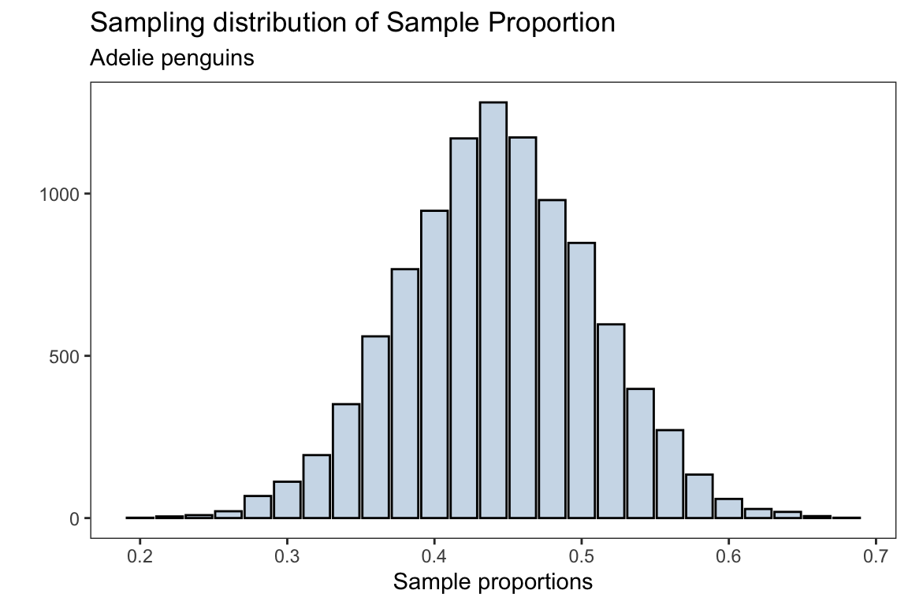

library(ggplot2)
library(patchwork)
library(palmerpenguins)Introduction to Central Limit Theorem
theme_set(theme_bw())
theme_replace(panel.grid.minor = element_blank(),
panel.grid.major = element_blank())Sampling Distributions
Sample mean
The sampling distribution of the sample mean is the theoretical distribution of means that would result from taking all possible samples of size \(n\) from the population.
Suppose we are sampling from a population which comes from a standard Normal distribution such that observations in our sample are iid (independent, identically distributed). Each sample of size \(n\) will then consists of realizations \(\{x_1,\dots,x_n\}\), such that each \(x_i\) will be a realization of the random variable \(X_i \sim N(0,1)\)
To obtain the sampling distribution for the sample mean,
For the total number of samples do the following:
- Generate a random sample of size \(n\) from the population
- Compute the sample mean and store the result in a variable, say
sample_means - Plot each of the
sample_meansusing a histogram
n_samples <- 10000
sample_size <- 100 # each sample will be of size 100
sample_means <- numeric(n_samples)
for(i in 1:n_samples){
sample_i = rnorm(n = sample_size, mean = 0, sd=1) # generate a new sample
sample_means[i] = mean(sample_i) # obtain mean for each sample
}Show Code
sampling_dist <- ggplot(data.frame(sample_means),aes(sample_means))+
geom_histogram(fill = 'steelblue',alpha = 0.3,
color = 'black',bins=30)+
labs(title = 'Sampling distribution',
x = 'Sample means',y = '')The plot above is the distribution of sample means after taking 10,000 samples with size \(n=100\) from the population. The overall distribution appears to be normally distributed (bell shaped curve).
The Central Limit Theorem (CLT) states that if you have a population with mean \(\mu\) and standard deviation \(\sigma\) and take sufficiently large random samples from the population with replacement, then the distribution of the sample means (sampling distribution) will be approximately normally distributed with mean \(\mu\) and standard error \(\frac{\sigma}{\sqrt{n}}\). Note, the standard deviation of the sampling distribution of the sample mean (or any other statistic) is referred to as the standard error.
Recall, the population is distributed as a standard normal distribution, i.e \(N(\mu=0,\sigma=1)\)
mean(sample_means)#> [1] -0.0003984072which is very close to the population mean of \(\mu =0\)
with standard error
sd(sample_means)#> [1] 0.1005629which is approximately \(\frac{\sigma}{\sqrt{n}} = \frac{1}{10}\)
Below is a demonstration of how increasing the sample size affects the distribution of the sample mean and seeing CLT in action
Show Code
n_samples <- 100
sample_means <- numeric(n_samples)
for(i in 1:n_samples){
sample_i = rnorm(n = n_samples, mean = 0, sd=1) # generate a new sample
sample_means[i] = mean(sample_i) # obtain mean for each sample
}
sample_mean <- round(mean(sample_means),3)
standard_error <- round(sd(sample_means),3)
sampling_dist100 <- ggplot(data.frame(sample_means),aes(sample_means))+
geom_histogram(fill = 'steelblue',alpha = 0.3,
color = 'black',bins=30)+
labs(title = 'Sampling distribution',
x = 'Sample means',y = '',
subtitle = paste0('mean=',sample_mean,
', standard error=',standard_error))+
facet_grid(~100)n_samples <- 1000
sample_means <- numeric(n_samples)
for(i in 1:n_samples){
sample_i = rnorm(n = n_samples, mean = 0, sd=1) # generate a new sample
sample_means[i] = mean(sample_i) # obtain mean for each sample
}
sample_mean <- round(mean(sample_means),3)
standard_error <- round(sd(sample_means),3)
sampling_dist1000 <- ggplot(data.frame(sample_means),aes(sample_means))+
geom_histogram(fill = 'steelblue',alpha = 0.3,
color = 'black',bins=30)+
labs(title = 'Sampling distribution',
x = 'Sample means',y = '',
subtitle = paste0('mean=',sample_mean,
', standard error=',standard_error))+
facet_grid(~1000)n_samples <- 5000
sample_means <- numeric(n_samples)
for(i in 1:n_samples){
sample_i = rnorm(n = n_samples, mean = 0, sd=1) # generate a new sample
sample_means[i] = mean(sample_i) # obtain mean for each sample
}
sample_mean <- round(mean(sample_means),3)
standard_error <- round(sd(sample_means),3)
sampling_dist5000 <- ggplot(data.frame(sample_means),aes(sample_means))+
geom_histogram(fill = 'steelblue',alpha = 0.3,
color = 'black',bins=30)+
labs(title = 'Sampling distribution',
x = 'Sample means',y = '',
subtitle = paste0('mean=',sample_mean,
', standard error=',standard_error))+
facet_grid(~5000)n_samples <- 10000
sample_means <- numeric(n_samples)
for(i in 1:n_samples){
sample_i = rnorm(n = n_samples, mean = 0, sd=1) # generate a new sample
sample_means[i] = mean(sample_i) # obtain mean for each sample
}
sample_mean <- round(mean(sample_means),3)
standard_error <- round(sd(sample_means),3)
sampling_dist10000 <- ggplot(data.frame(sample_means),aes(sample_means))+
geom_histogram(fill = 'steelblue',alpha = 0.3,
color = 'black',bins=30)+
labs(title = 'Sampling distribution',
x = 'Sample means',y = '',
subtitle = paste0('mean=',sample_mean,
', standard error=',standard_error))+
facet_grid(~10000)plots <- sampling_dist100 + sampling_dist1000 + sampling_dist5000 +
sampling_dist10000 + plot_layout(nrow=2, ncol=2)To interactively visualize how the sampling distribution of the sample mean builds up one sample at a time and see when the Central Limit Theorem start to kick in, I highly recommend the art of stats sampling distributions and Central Limit Theorem web applications.
Application: Sample Mean
Now we will apply the the concepts of generating a sampling distribution for the sample mean using a real world dataset. In particular, we will use the penguins dataset from the palmerpenguins package.
Using the penguins dataset we will generate a sampling distribution for the sample mean of the penguins’ body mass (grams)
For simplicity, we will remove any missing observations
body_mass_g <- penguins$body_mass_g[!is.na(penguins$body_mass_g)]Recall, to obtain the sampling distribution for the sample mean, do the following process
For the total number of samples do the following:
- Generate a random sample of size \(n\) from the population,
penguins$body_mass_g - Compute the sample mean of the penguins body mass and store the result in a variable, say
body_mass_xbar - Plot each of the
body_mass_xbarusing a histogram
n_samples <- 10000
sample_size <- 50
body_mass_xbar <- numeric(n_samples)
for(i in 1:n_samples){
sample_i = sample(body_mass_g, size = sample_size) # generate a new sample
body_mass_xbar[i] = mean(sample_i) # obtain mean for each sample
}Show Code
sampling_dist <- ggplot(data.frame(body_mass_xbar),
aes(body_mass_xbar))+
geom_histogram(fill = 'steelblue',alpha = 0.3,
color = 'black',bins=30)+
labs(title = 'Sampling distribution of Sample Mean',
subtitle = 'Penguins body mass (grams)',
x = 'Sample means',y = '')The mean for the sampling distribution is
mean(body_mass_xbar)#> [1] 4201.269which is approximately the population mean for the penguins body mass (without missing observations)
mean(body_mass_g)#> [1] 4201.754the standard error for the sampling distribution is
sd(body_mass_xbar)#> [1] 105.2723Sample proportions
The idea behind generating a sampling distribution for sample proportions is very similar to the procedure described in Sample means section.
To obtain the sampling distribution for the sample proportions;
For the total number of samples do the following:
- Generate a random sample of size \(n\) from the population
- Compute the sample proportion and store the result in a variable, say
sample_proportions - Plot each of the
sample_proportionsusing a histogram
Here the sample proportion is the fraction of samples which were success. We will take a large number of random samples from the population, where the population is generated from a binomial distribution with 10 trials and probability of success \(p=0.25\) for each trial.
n_samples <- 10000
sample_size <- 100 # each sample will be of size 100
n_trials <- 10
sample_proportions <- numeric(n_samples)
for(i in 1:n_samples){
sample_i = rbinom(n = sample_size, size= n_trials,
prob = 0.25) # generate a new sample
sample_proportions[i] = mean(sample_i)/n_trials # obtain proportion for each sample
}Show Code
sampling_dist_prop <- ggplot(data.frame(sample_proportions),
aes(sample_proportions))+
geom_histogram(fill = 'steelblue',alpha = 0.3,
color = 'black',bins=30)+
labs(title = 'Sampling distribution',
x = 'Sample proportions',y = '')The plot above is the distribution of sample proportions after taking 10,000 samples with size \(n=100\) from the population. The overall distribution appears to be normally distributed (bell shaped curve).
Through the CLT, the sampling distribution for the sample proportions will be distributed with mean \(p\) and standard error \(\sqrt{\frac{p(1-p)}{n}}\), \(\hat{p} \sim N(p,\sqrt{\frac{p(1-p)}{n}} )\)
mean(sample_proportions)#> [1] 0.2501959which is approximately the population parameter \(p=0.25\).
The standard error is
sd(sample_proportions)#> [1] 0.01370153Application: Sample proportion
Using the penguins dataset we will generate a sampling distribution for the sample proportion of the Adelie penguins
For simplicity, we will remove any missing observations
species <- penguins$species[!is.na(penguins$species)]Recall, to obtain the sampling distribution for the sample proportion
For the total number of samples do the following:
- Generate a random sample of size \(n\) from the population,
penguins$species(without missing observations) - Compute the sample proportion of the penguins Adelie species and store the result in a variable, say
adelie_proportions - Plot each of the
adelie_proportionsusing a histogram
n_samples <- 10000
sample_size <- 50
adelie_proportions <- numeric(n_samples)
for(i in 1:n_samples){
sample_i = sample(species, size = sample_size) # generate a new sample from the population
adelie_proportions[i] = mean(sample_i == 'Adelie') # obtain proportion for each sample
}Show Code
sampling_dist <- ggplot(data.frame(adelie_proportions),
aes(adelie_proportions))+
geom_bar(fill = 'steelblue',alpha = 0.3,
color = 'black')+
labs(title = 'Sampling distribution of Sample Proportion',
subtitle = "Adelie penguins",
x = 'Sample proportions',y = '')
The mean for the sampling distribution is
mean(adelie_proportions)#> [1] 0.442826which is approximately the population proportion for the Adelie penguins (without missing observations)
prop.table(table(species))['Adelie']#> Adelie
#> 0.4418605the standard error for the sampling distribution is
sd(adelie_proportions)#> [1] 0.0654046which should approximately be \(\sqrt{\frac{p(1-p)}{n}}\)
p <- prop.table(table(species))['Adelie']
sqrt((p*(1-p))/sample_size)#> Adelie
#> 0.07023102